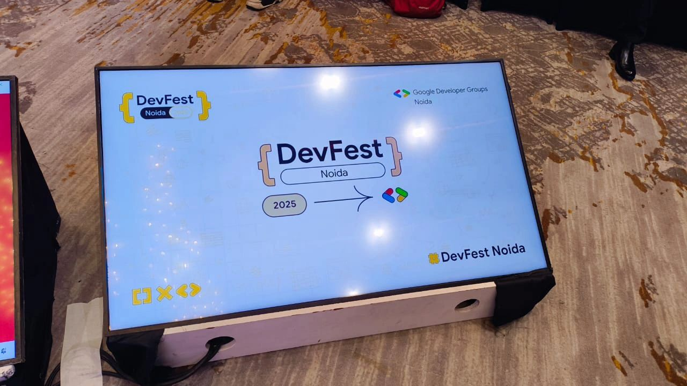
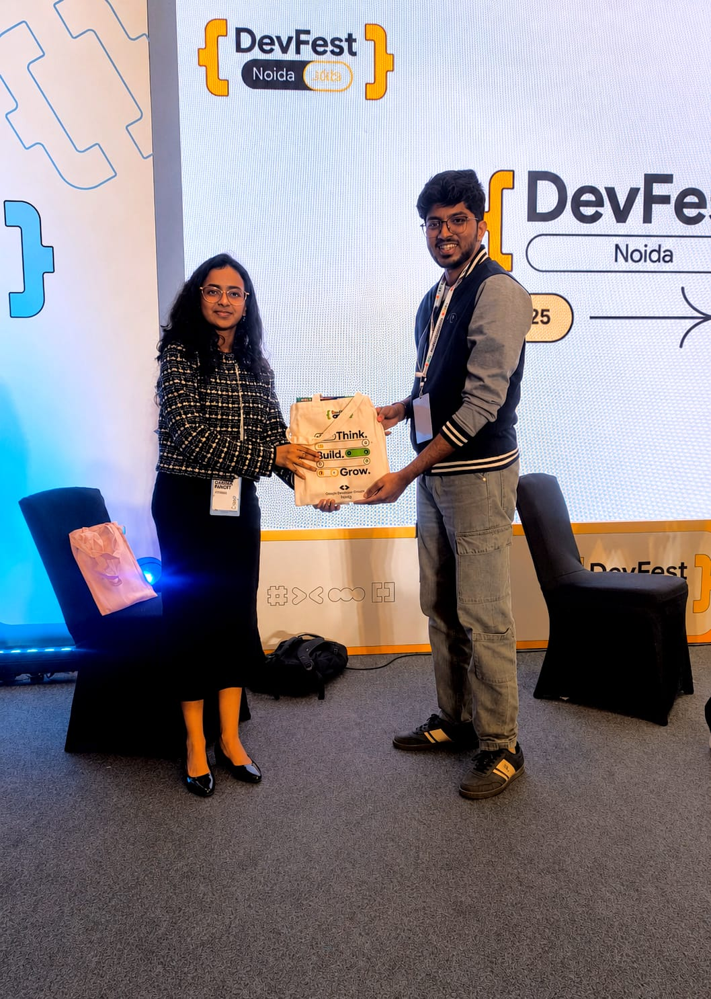
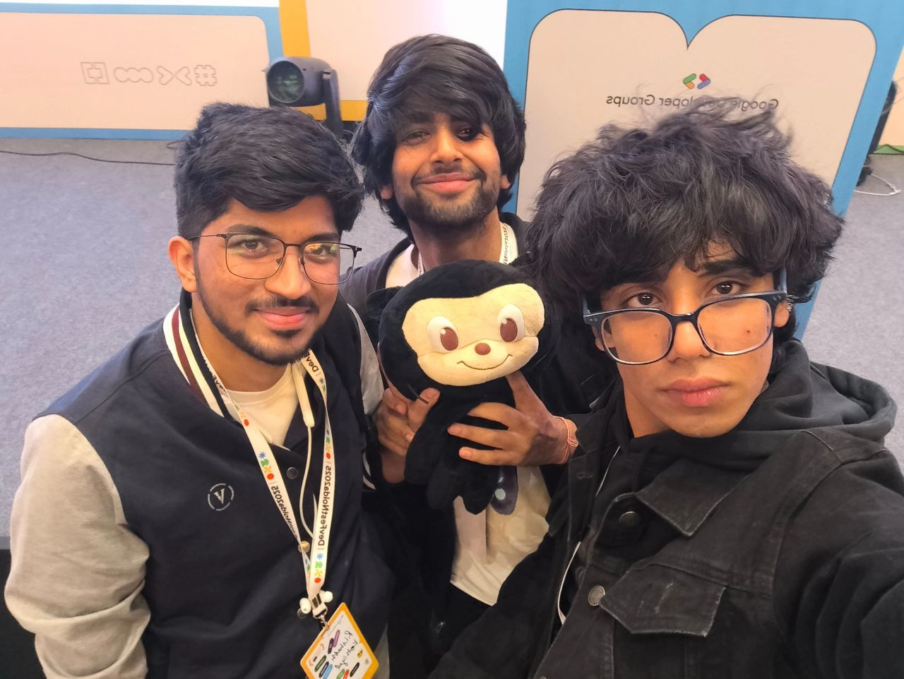

My First Experience at GDG Noida DevFest 2025

Attending GDG Noida DevFest 2025 was something I had been looking forward to for quite some time, and it definitely lived up to my expectations.
It was my first DevFest, so I wasn't exactly sure what the day would be like. As soon as I reached the venue, I could feel the excitement. The place was full of developers, designers, founders, students, and tech enthusiasts who were all there to learn and meet people with similar interests. The atmosphere was energetic, and every conversation seemed to teach me something new.
By the end of the day, I came back with a notebook full of ideas, a lot of inspiration, and a fresh perspective on where technology is heading.

Sessions That Stood Out
This was one of my favorite sessions of the event.
Before attending the talk, I mostly thought of AI as interacting with a single language model. The session introduced the idea of multiple AI agents working together, where each agent has a specific responsibility such as planning, executing tasks, or reviewing results.
What I found most interesting was how practical the concept felt. The discussion around self-correcting workflows and human checkpoints made it easy to imagine how these systems could be used in real products.

I left the session with a completely different perspective on how AI applications are evolving.
This session reminded me that AI can be useful much earlier than the development phase.
Shruti explained how founders and product teams can use AI to validate ideas, understand customer needs, and analyze market trends before spending months building something.
One simple idea stayed with me throughout the day.
Building the right product is often more important than simply building a product.
This was probably the most unique session I attended.
Instead of talking only about interfaces or design trends, Joy Banerjee shared how nature influences the way people think, behave, and interact with products.

Listening to someone connect natural patterns with product design was something I had never experienced before. It made me realize that good design is not only about making something look beautiful. It is about creating experiences that feel natural and intuitive.
The Best Part Was Meeting People
The sessions were amazing, but the conversations between them were just as valuable.
During breaks, I got the chance to interact with students, developers, designers, and startup founders. Everyone was open to sharing their experiences, discussing ideas, and talking about technology.
Since it was my first DevFest, I expected to feel a little nervous, but the community was incredibly welcoming. By the end of the day, I had met people who were just as passionate about building and learning as I was.

Winning a Goodie Bag
One of the most unexpected moments of the day was winning a GDG Noida goodie bag.

It was a small surprise, but it made the experience even more memorable. I still have it, and every time I look at it, it reminds me of everything I learned that day.
What Was in the Swag Bag?
Curiosity got the better of me, so I had to see what was inside.

The bag had some cool stickers, a notebook, a pen, and a few other goodies. Honestly, it wasn't about what was inside — it was the fact that I won it. (And no, the MacBook in the photo was not part of the swag, unfortunately. A man can dream.)
Finally Meeting Mona
Another fun moment was finally seeing Mona, GitHub's mascot, in person.
It might seem like a small thing, but after seeing Mona on GitHub for years, it was exciting to see the mascot at the event. It was one of those little moments that made the day even more enjoyable.

Looking Back
When I think about DevFest now, I don't just remember the technical sessions.
I remember the people I met, the conversations I had, the ideas I wrote down, the excitement of winning a goodie bag, and the feeling of being surrounded by a community that genuinely loves technology.
A huge thank you to the entire GDG Noida team and all the volunteers for organizing such a wonderful event. Everything was managed smoothly, and it was clear how much effort had gone into making the experience enjoyable for everyone.
My first DevFest gave me new ideas, new connections, and plenty of motivation to keep learning.
I'm already looking forward to attending many more community events in the future.